여러 사이트를 한 곳에서
영어 제목 사이트의 작품도 한국어 제목으로 보여 주고, 한국어로 검색합니다. TMDB 키를 넣으면 줄거리까지 한국어로 나옵니다.
RE:AnimeMiruroAnimenosub
애니24링크애니Linkkf
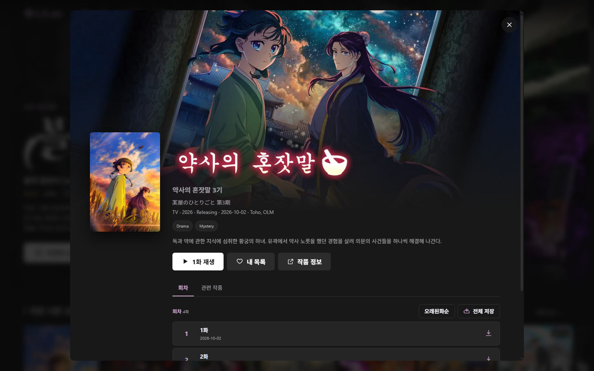
여러 사이트의 애니를 한곳에서 찾아 보고, 한국어 자막을 알아서 찾아 입힙니다. 자막이 없으면 일본어·영어 자막을 한국어로 번역해 드립니다.
무료 · 다른 운영체제 · 모든 릴리즈 · Android 원작
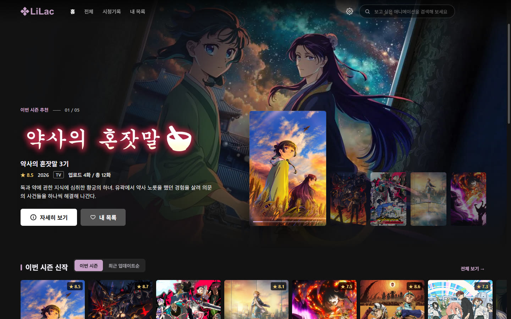
Android LilacAnime의 기능과 용어는 그대로, 화면은 넓은 데스크톱에 맞게 옮겼습니다.
영어 제목 사이트의 작품도 한국어 제목으로 보여 주고, 한국어로 검색합니다. TMDB 키를 넣으면 줄거리까지 한국어로 나옵니다.

사이트의 한국어 트랙, Kairan · Csora · Anissia 블로그 자막을 동시에 찾아 바로 입힙니다. 따로 할 일은 없습니다.
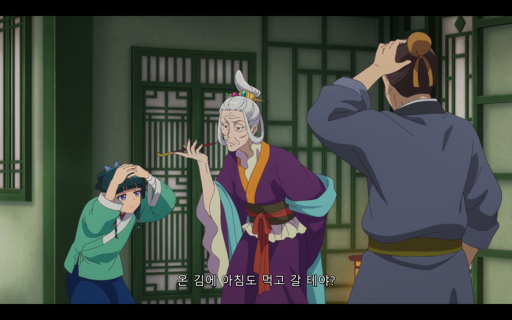
Jimaku 일본어 자막이나 사이트의 일본어·영어 트랙을 번역합니다. 보고 있는 장면부터 번역해 번역된 줄은 바로 한국어로 바뀌고, 다음 화는 보는 동안 미리 번역해 둡니다.
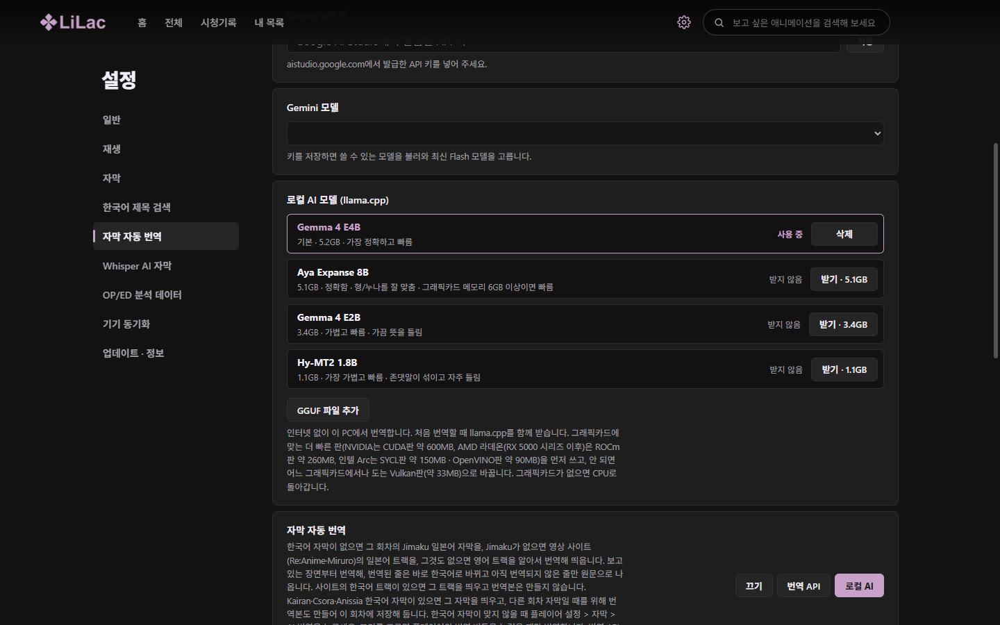
자막 자동 번역: 로컬 AI 모델 목록" loading="lazy">회차를 자막 · OP/ED 구간까지 함께 저장해 인터넷 없이도 그대로 봅니다. 외장하드로 옮겨도 저장 폴더만 바꾸면 다시 이어집니다.
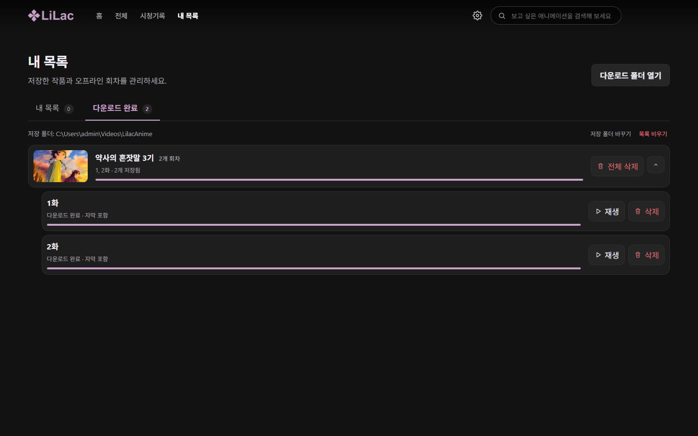
다운로드: 작품별로 묶인 회차" loading="lazy">내 목록과 시청 기록(이어 보기 위치 포함)을 Android 앱과 맞춥니다. 데이터는 내가 직접 만든 서버에만 저장됩니다.
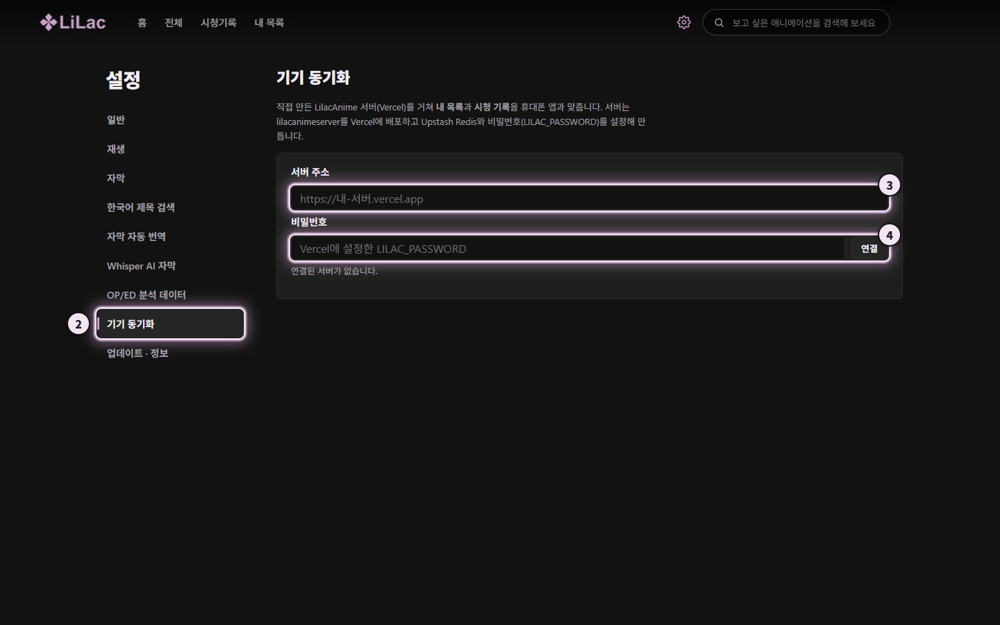
기기 동기화" loading="lazy">설치한 뒤에는 새 버전이 나오면 앱이 알려 주고, 설정 > 업데이트 · 정보에서 바로 받을 수 있습니다.
.dmg를 열고 LilacAnime을 응용 프로그램 폴더로 끌어 놓습니다.그래도 열리지 않으면 터미널에서 xattr -cr /Applications/LilacAnime.app을 실행한 뒤 다시 엽니다.
sudo apt install ./LilacAnime-linux-amd64.deb (arm64면 그 파일 이름). 앱 메뉴에 LilacAnime이 생깁니다.지우려면 sudo apt remove lilacanime-desktop. 한국어 자막에는 fonts-noto-cjk 또는 fonts-nanum을 권장합니다.
한국어 자막을 찾는 데 가장 중요한 설정입니다. RE:Anime · Miruro · Animenosub는 작품 제목이 영어라서, 한국어 자막(Kairan · Csora · Anissia)을 찾으려면 한국어 제목을 알아야 합니다. TMDB 키가 있으면 훨씬 많은 작품의 한국어 제목을 찾아 자막이 더 많이 붙고, 제목과 줄거리도 한국어로 나옵니다. 키는 무료이고 PC 브라우저로 5분쯤 걸립니다.
LilacAnime, 주소는 아무 주소(예: GitHub 주소), 설명은 "개인용 애니 제목 검색"이면 됩니다.TMDB 신청 화면은 휴대폰에서 잘 안 되니 PC로 해 주세요.
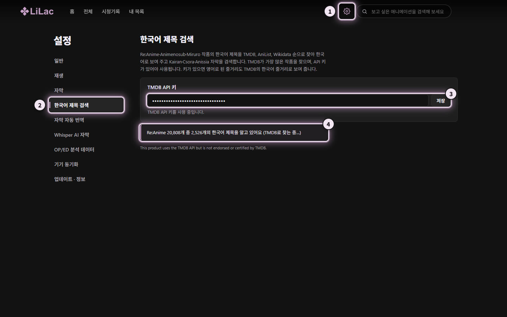
한국어 제목 검색: 1 설정 버튼, 2 한국어 제목 검색, 3 TMDB API 키 입력과 저장, 4 한국어 제목 진행 상황" loading="lazy">화면 속 번호가 아래 순서와 같습니다.
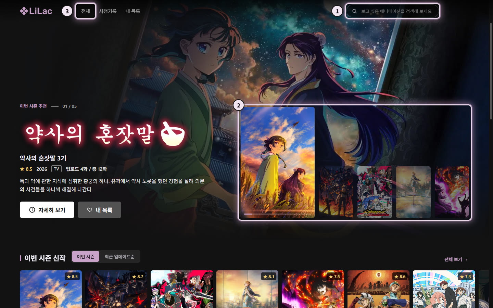
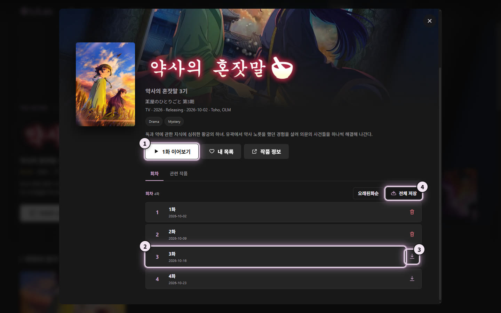
자막은 앱이 알아서 찾아 입힙니다. 홈의 이어서 보기나 위쪽 시청기록에서 멈춘 곳부터 이어집니다.
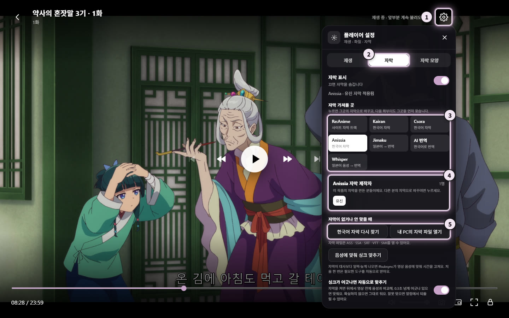
자막: 1 설정 버튼, 2 자막 탭, 3 자막 가져올 곳, 4 자막 제작자, 5 다시 찾기와 파일 열기" loading="lazy">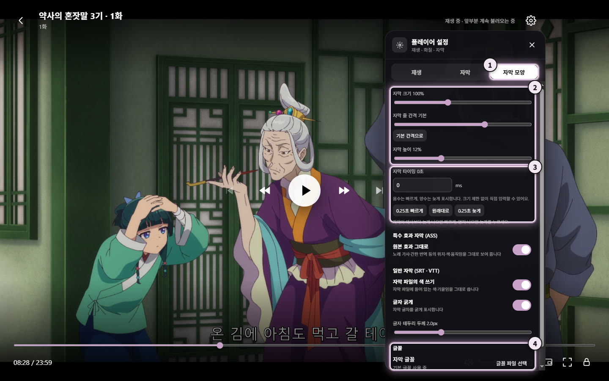
자막 모양: 1 탭, 2 크기와 높이, 3 타이밍, 4 글꼴" loading="lazy">싱크가 어긋나면 앱이 영상 음성에 맞춰 자동으로 맞춥니다. 플레이어 위 알림의 되돌리기로 원래대로 돌아갈 수 있어요.
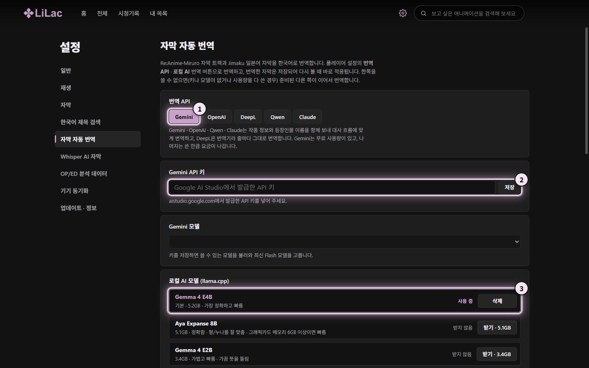
자막 자동 번역: 1 번역 API, 2 API 키, 3 로컬 AI 모델" loading="lazy">한국어 자막이 없는 작품도 보려면 둘 중 하나만 준비하면 됩니다.
준비가 되면 한국어 자막이 없는 회차를 열기만 하면 됩니다. 보고 있는 장면부터 번역해 몇 초 뒤면 대사가 한국어로 바뀝니다.
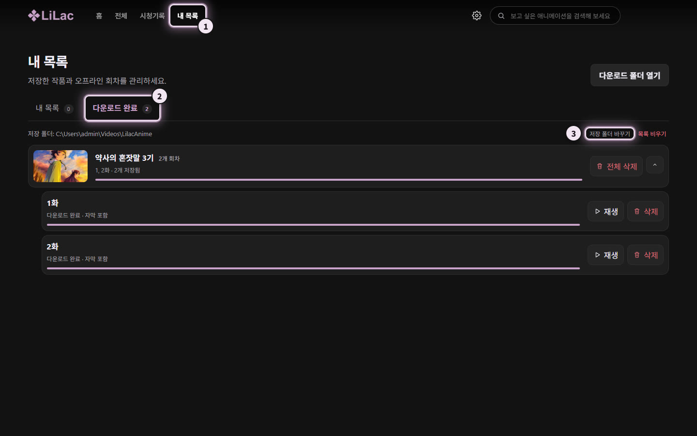
다운로드 완료: 1 내 목록, 2 다운로드 완료 탭, 3 저장 폴더 바꾸기" loading="lazy">LILAC_PASSWORD(8자 이상)를 정합니다. 한 번만 하면 됩니다.재생을 시작하면 이 순서로 자막을 정합니다. 플레이어 설정 > 자막에서 언제든 직접 바꿀 수 있습니다.
이 회차에 직접 고르거나 번역해 둔 자막
RE:Anime · Miruro의 한국어 트랙, Linkkf 자막
Kairan · Csora · Anissia를 동시에 찾고, 설정에서 고른 곳을 먼저
일본어·영어 자막을 띄우고 보고 있는 장면부터 번역
설정 > 재생 > 콘텐츠 / 영상 소스에서 고릅니다. 고른 사이트가 응답하지 않으면 홈에 안내가 나오고 다시 시도하거나 소스를 바꿀 수 있습니다.
| 소스 | 목록 · 검색 | 영상 | 자막 |
|---|---|---|---|
| RE:Anime | 2만여 작품, 한국어 검색 | 자막 없는 영상 | 여러 언어 자막 트랙, 한국어 트랙 자동 적용 |
| Miruro | 한국어 검색, 회차 제목 · 방영일 | SUB · RAW · SOFT · DUB | SOFT 서버의 여러 언어 자막 트랙 |
| Animenosub | 한국어 검색 | SUB · RAW | 한국어 자막 온라인 검색 |
| 애니24 | 한국어 목록 · 검색, 장르 · 방영일 | 1080p | 대부분 영상에 한국어 자막 포함 |
| 링크애니 | 한국어 목록 · 검색, 인기순 | 1080p, OP/ED 건너뛰기 | 대부분 영상에 한국어 자막 포함 |
| Linkkf | 한국어 목록 | 사이트 기본 영상 | 사이트의 한국어 자막 |